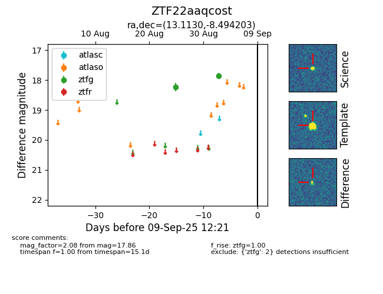

FINK: ZTF22aaqcost
Lasair: ZTF22aaqcost
ALeRCE: ZTF22aaqcost
ZTF22aaqcost (ztf,fink)
equatorial (ra, dec) = (13.1130,-8.49420)
galactic (l, b) = (123.7166,-71.36441)

last ztfg=17.86
2 ztfg detections